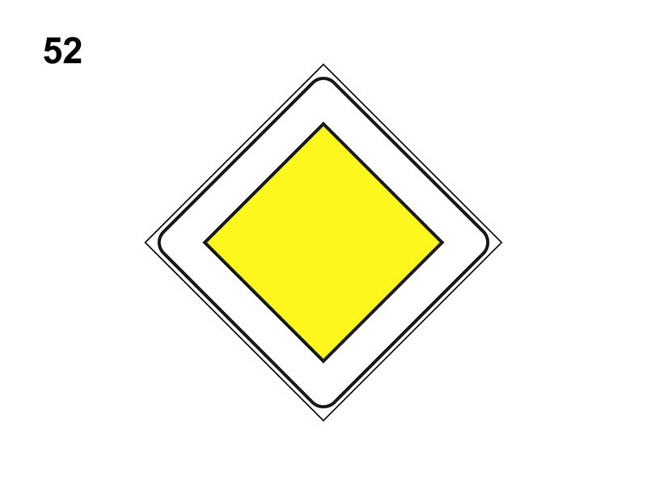

Diritto di precedenza

E' un segnale di prescrizione (precedenza).
Indica l'inizio di una strada urbana o extraurbana in cui i veicoli hanno diritto di precedenza.
Può essere ripetuto in formato piccolo prima e dopo ogni incrocio, anche integrato dal pannello 'ANDAMENTO DELLA STRADA PRINCIPALE'.
Comporta la presenza sulle strade che si incrociano del segnale 'DARE PRECEDENZA' o 'STOP'.
In presenza del segnale raffigurato bisogna comunque dare la precedenza ai veicoli che hanno in funzione il lampeggiante blu e sirena.
Bisogna comunque moderare la velocità in prossimità degli incroci e assicurarsi che i veicoli provenienti dalle strade laterali diano la precedenza.
Non è vero che è posto esclusivamente su strade extraurbane ad intenso traffico, o che si ha la precedenza fino all'uscita del centro abitato, o che è posto solo su strade statali.
Indica l'inizio di una strada urbana o extraurbana in cui i veicoli hanno diritto di precedenza.
Può essere ripetuto in formato piccolo prima e dopo ogni incrocio, anche integrato dal pannello 'ANDAMENTO DELLA STRADA PRINCIPALE'.
Comporta la presenza sulle strade che si incrociano del segnale 'DARE PRECEDENZA' o 'STOP'.
In presenza del segnale raffigurato bisogna comunque dare la precedenza ai veicoli che hanno in funzione il lampeggiante blu e sirena.
Bisogna comunque moderare la velocità in prossimità degli incroci e assicurarsi che i veicoli provenienti dalle strade laterali diano la precedenza.
Non è vero che è posto esclusivamente su strade extraurbane ad intenso traffico, o che si ha la precedenza fino all'uscita del centro abitato, o che è posto solo su strade statali.